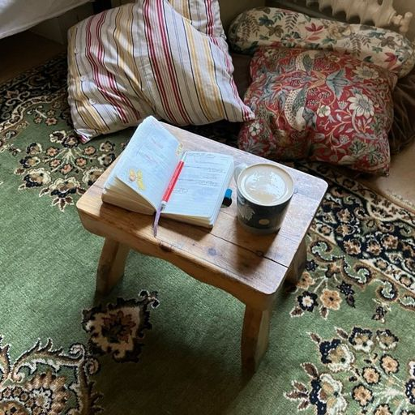
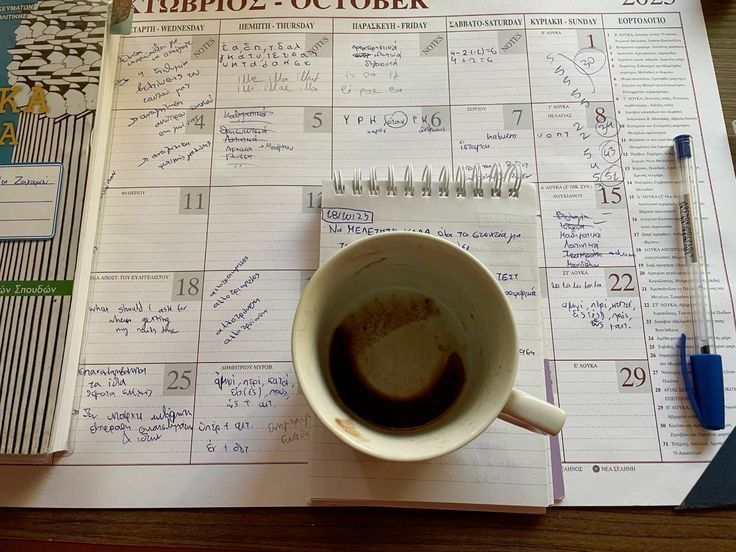

la SOBREPLANIFICACIÓN . ݁₊ ⊹ . ݁˖ . ݁
tengo un problema con sobre planificarme, pero nunca empezar.

antes creía que era más productiva por tener todo organizado pero ni siquiera avanzaba, y aunque se sienta incómodo, más incómodo es permanecer en el mismo sentimiento una y otra vez donde la ansiedad aumenta.
y todos sabemos que planificarse es lo esencial para poder cumplir con tus objetivos pero, ¿qué pasa cuando caes en un loop en el que re-planificas y re-planificas esperando que todo esté perfecto? no avanzas esperando el momento perfecto, cuando no existe hasta que actúas.
y hasta hace poco decidí ACTUAR, dejando de lado el actualizar y actualizar mi Notion cada que podía. el perfeccionismo es el enemigo número uno del progreso y salir de tu zona de confort es lo mejor que puedes hacer para avanzar.

MINI NOTES ✧
- HACER: metas, acción, cuándo/cuánto.
- REDUCIR: versión mínima para mis días malos.
- VOLVER: volver rápido es el objetivo. “no conviertas una excepción en rutina”.
y no crean que es fácil salir de ese loop pero lo hice más sencillo así:
- no esperes tener el 100% del plan perfecto; así estés al 70% del plan ejecuta a partir de ahí y luego perfecciona. siempre tomo 1 día para organizarme pero al tener todo listo decidí no revisarlo más y trabajar sobre la marcha y construir ese 100%.
- no esperes más de 2 minutos para iniciar; no permitas a tu mente pensar tanto para cambiarte e ir a hacer ejercicio, por ejemplo.
- enfócate en la versión mínima y establece un time box; si tu objetivo a largo plazo es crear por fin tu emprendimiento → define las 3 tareas para iniciar con un cronómetro de 30 minutos (público objetivo, propósito/valores…) y cuando suene la alarma empieza la primera tarea sin importar qué.
el momento correcto no llega, se construye a base de intentos que al principio se sienten un poco desordenados.
← volver al inicio